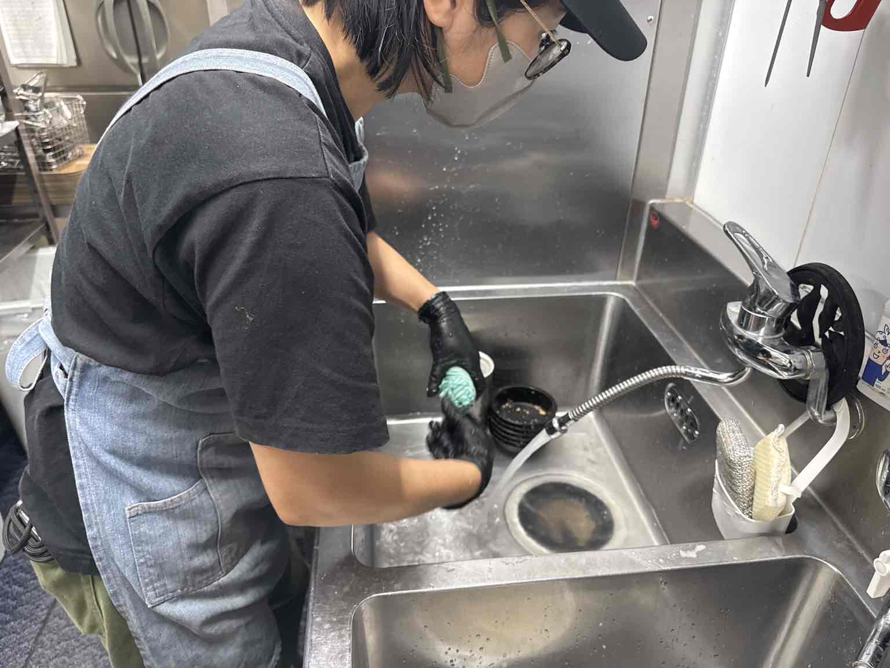

パン製造スタッフ
仕込み・分割・成形・焼成・仕上げなど、 パン製造に関わる仕事です。
大型ミキサーを使った生地づくりから、 分割、成形、焼成、仕上げまで、 さまざまな工程を経験できます。
現在、製造部門は正社員のみ募集しています。
一人ひとりの仕事がつながって、
17Bakeryの一日ができています。
17Bakeryは、愛知県稲沢市にあるベーカリーです。
パンをつくる人。
売り場をつくる人。
お客様を迎える人。
それぞれの仕事がつながることで、
17Bakeryというお店ができています。
私たちが採用で大切にしているのは、
経験だけではありません。
時間や約束を守る。
教わったことを一つずつ覚える。
分からないことは確認する。
周りを見ながら協力する。
忙しいときほど声を掛け合う。
最初から何でもできる必要はありません。
できなかったことが、
少しずつできるようになる。
そんな成長を楽しめる方と、
一緒に働きたいと思っています。
仕込み・分割・成形・焼成・仕上げなど、 パン製造に関わる仕事です。
大型ミキサーを使った生地づくりから、 分割、成形、焼成、仕上げまで、 さまざまな工程を経験できます。
現在、製造部門は正社員のみ募集しています。
現在、土日に勤務できる方を募集しています。
時給 1,500円
※研修期間中は時給1,200円
レジ・袋詰め・商品のお渡し・品出し・ 売り場整理・洗い物・片付け・清掃などを担当します。
最初は基本となるレジ業務から覚えていきます。
慣れてきたら、
品出し・洗い物など、
少しずつできる仕事を増やしていきます。
基本的には、
レジ・品出し・洗い物の3ポジションを
1時間ごとにローテーション。
一日中ずっと同じ作業をするのではなく、
時間ごとに仕事内容が変わります。



丁寧さと正確さを大切にしながら、 お客様をお迎えします。
パンを丁寧に袋へ入れ、 お客様へお渡しする準備をします。
焼き上がったパンを補充し、 たくさんのパンが並ぶ売り場をつくります。
洗い物や片付けを行い、 次の仕事がスムーズに進むよう チーム全体を支えます。
製造スタッフは、
生地の仕込みから焼き上げ・仕上げまで、
パンづくりのさまざまな工程を担当します。
一つの工程だけではなく、
少しずつ仕事の幅を広げていきます。

材料を合わせ、 ミキサーを使ってパン生地を仕込みます。

仕込んだ生地を、 商品ごとに決められた重量へ分割していきます。

パンの種類に合わせて、 一つずつ形をつくっていきます。